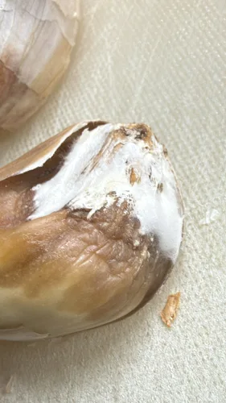

Onion and garlic bases with white felt and black grains
When onions or garlic yellow in a patch, lift one declining plant with its bulb intact. The side where the roots join the bulb is the most informative place to look for white rot.

Inspect the specimen
Separate loose outer wrappers without stripping sound cloves. Look for dense white growth around the base and minute black bodies embedded in it, resembling a dusting of poppy seeds.
Check similar symptoms
Basal discoloration also occurs with Fusarium, and secondary decay can obscure either disease. Photograph the white and black structures together with any remaining roots before the specimen dries.
Choose a response
Keep soil and bulbs from the suspect patch separate. Clean soil from tools and footwear at that location. Avoid saving cloves from the affected planting as seed stock.
Track the next change
Mark the patch boundaries and ask a diagnostic clinic to confirm the sample before planning another allium crop. Survival structures can remain in soil for many years, so a short break between crops is inadequate.
Host-specific check
On garlic, retain the entire basal plate when lifting a specimen. A collection of separated cloves can lose the very part where the disease pattern is clearest.